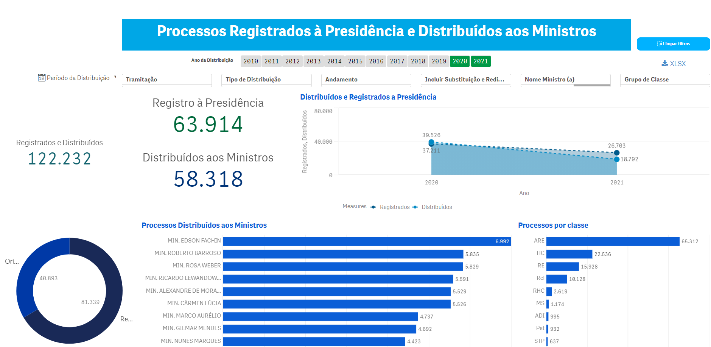

7.1 Painel de distribuição aos Ministros e Registrado à Presidência
Do total de processos recebidos, alguns são registrados à Presidência por atribuição regimental e outros são distribuídos aos ministros.

Taxonomia do Painel
O painel de Registrados à Presidência e Distribuídos aos Ministros possui 8 filtros, além da disponibilidade de utilizar gráficos e tabelas para outras seleções.
| Dimensão | Definição |
|---|---|
| Período da Distribuição | Seleciona um período entre datas específicas. |
| Ano da Distribuição | Filtra o ano em que o processo foi distribuído. |
| Tramitação | Dos processos que foram distribuídos mostra aqueles que ainda estão em tramitação ou não |
| Tipo de distribuição | Classifica se o processo foi distribuído para o Ministro Presidente ou demais Ministros |
| Andamento | Esse filtro mostra em quais Subgrupos estão divididas as distribuições |
| Incluir Substituição e/ou Redistribuição | Inclui no painel aqueles casos que tiveram a Substituição e/ou Redistribuição de um relator por outro Ministro |
| Nome Ministro(a) | Ministro que foi registrado na distribuição. Nesse filtro, ao selecionar um Ministro, será selecionado a quantidades de processos Distribuídos aos Ministros e/ou Registrados à Presidência. |
| Grupo de Classe | As classes foram agrupadas em quatro subgrupos, conforme abaixo: 1. Controle Concentrado: 1. Processos das classes Ação Declaratória de Constitucionalidade (ADC); 2. Ação Direta de Inconstitucionalidade (ADI); 3. Ação Direta de Inconstitucionalidade por Omissão (ADO); 4. Arguição de Descumprimento de Preceito Fundamental (ADPF). 2.Criminais4: 1. Processos das classes Ação Penal (AP); 2. Execução de Pena (EP); 3. Extensão (Ext); 4. Habeas Corpus (HC); 5. Inquérito (Inq); 6. Prisão Preventiva para Extradição (PPE); 7. Recurso Crime (RC); 8. Recurso em Habeas Corpus (RHC); e 9. Revisão Criminal (RvC). 3. Recursais: 1. Recurso extraordinário (RE); 2. Recurso extraordinário com agravo (ARE); e 3. Agravo de instrumento (AI). 4. Demais originárias: Todas as classes originárias, exceto controle concentrado e criminais. |
Dados Abertos
O painel permite que os dados sejam baixados num link no canto superior direito:
 As variáveis possíveis de serem consultados pelo XLSX:
As variáveis possíveis de serem consultados pelo XLSX:
| Variável | Definição |
|---|---|
| Id Processo | Chave numérica única para cada processo. |
| Classe | Sigla da classe do processo no STF. |
| Número | Número do processo no STF. |
| Nome Ministro (a) | Informa para qual Ministro o processo foi distribuído |
| Data Andamento | Data em que o processo foi distribuído |
| Qtd Ocorrências Processuais | Informa a quantidade de ocorrências em cada andamento processual. |
| Andamento | Descreve qual andamento foi lançado no ato da distribuição. |
| Classificação STF | Recursal ou originária |
| Subgrupo Andamento | Informa a qual Subgrupo o andamento pertence. |
Tutoriais do Painel
| Nome do gráfico e/ou tabela | Definição |
|---|---|
| Registrados e Distribuídos | Quantitativos geral dos processos registrados à Presidência e distribuídos aos Ministros |
| Registro à Presidência | Quantitativo dos processos registrados à Presidência |
| Distribuídos aos Ministros | Quantitativo dos processos distribuídos aos Ministros |
| Distribuídos e Registrados à Presidência | Gráfico em linha dos processos distribuídos por ano |
| Processos pro classe | Gráfico em barra dos processos por classe processual |
| Processos Distribuídos aos Ministros | Gráfico em barra da distribuição por ministro |
| Gráfico pizza | Distribuição por processo recursal ou originário |
| Processos por ramo do direito | Mapa de árvore da distribuição por ramo do direito |
| Processos Distribuídos por órgão origem | Tabela dos processos distribuídos aos Ministros por órgão origem |
| Processo Registrados por órgão origem | Tabela dos processos registrados à Presidência por órgão origem |
De modo geral, para filtrar algum gráfico ou tabela selecione um ou mais valores e depois confirme o filtro no botão verde conforme indicado na imagem abaixo:

Para limpar os filtros de todo o painel basta clicar no botão “limpar filtros” no canto superior direito:

Segue abaixo uma visão geral do painel, filtros, tabelas e gráficos:

As classes criminais referem-se a classes de processos tipicamente criminais, como HC. Não incluem processos de outras classes que recebem marcação interna de preferência criminal.↩︎